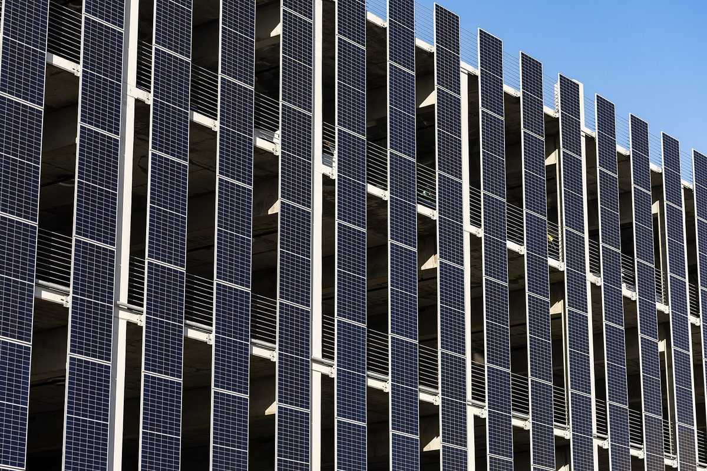

태양광 1위 캘리포니아에 커뮤니티 솔라가 없다…2022년 법 만들고도 교착, 뉴섬 주지사 AB 1813 거부

규제기관 CPUC는 2024년 결정권을 전력회사 쪽에, 회피비용으로 값 매기고 배터리 붙인 새 법안은 9월 거부권…시민·노동·환경단체 연합 2027년 재추진, 개발사는 제도 있는 22개 주로 투자 돌려
미국에서 태양광 설비가 가장 많은 캘리포니아주가 주 의회가 커뮤니티 솔라 제도를 만들라고 법으로 정한 2022년 뒤 4년이 지나도록 실제로 돌아가는 제도를 갖추지 못하고 있다. 커뮤니티 솔라는 지역에 세운 태양광 사업에 여러 가입자가 참여해 생산량 몫만큼 전기요금 크레딧을 받는 방식으로, 지붕에 패널을 달 수 없는 세입자와 저소득층이 전국에서 두 번째로 비싼 전기요금을 덜 수 있는 길로 꼽힌다. 2022년 개빈 뉴섬 주지사가 서명한 AB 2316은 고객 10만 명이 넘는 대형 전력회사에 이런 제도를 만들게 했지만, 2024년 주 공익사업위원회(CPUC)가 태양광 단체들의 제안을 기각하고 전력회사 쪽에 결정권을 더 줬으며, 저소득층 요금 부담 보장 등을 담은 AB 1260도 끝내 채택되지 못했다. 주 의회는 CPUC의 회피비용 계산기로 발전 가치를 매기고 배터리 저장장치를 함께 갖추게 한 AB 1813을 통과시켰으나, 뉴섬 주지사는 9월 거부권을 행사하며 행정적으로 정한 값이 발전이 전력망에 주는 가치보다 높아 소비자 요금을 밀어 올리고 결국 "비용을 떠넘기는" 법안이라고 밝혔다. 환경정의·노동·요금납부자·지역에너지조달(CCA)·건설업계가 함께한 연합 CLASS의 데릭 처노 사무총장은 2027년에 행정 조치나 입법으로 제도를 꼭 만들겠다고 했고, 샌프란시스코의 커뮤니티 솔라 개발사 Renewable Properties의 에런 할리미 대표는 제도가 있는 다른 22개 주에 투자를 더 돌리겠다고 밝혔다. 12월 새 회기가 시작되면, 2027년 1월 임기를 마치는 뉴섬 주지사의 뒤를 이을 새 주지사가 2027년 9월까지 관련 법안에 서명할 수 있다.
시민에너지 관점
제도가 있는 22개 주로 투자가 빠져나가는 사이 태양광 설비가 가장 많은 주는 4년째 빈손이라는 것은, 지붕 없는 주민의 참여를 막는 벽이 기술이 아니라 전기 값을 누가 어떻게 매기느냐에 있다는 뜻이다. 가입하지 않은 고객에게 비용이 넘어간다는 우려는 가볍지 않지만, 그 답은 제도를 막는 것이 아니라 공개된 계산법으로 크레딧 값을 따지고 배터리로 전력망이 필요할 때 전기를 내도록 설계하는 데 있으며, 거부된 법안이 바로 그 방향이었다. 유럽연합(EU)도 2024년 전력시장 개편에서 소비자가 재생에너지 전기를 이웃과 나눠 쓰는 '에너지 공유'를 권리로 법에 담았듯, 주민과 지역이 발전소의 주인이 될 때 요금 절감은 전력회사의 상품이 아니라 주민의 몫으로 남는다. 국내에서도 한전이 전력 판매를 맡는 구조 안에서 이웃끼리 햇빛 전기를 나누고 요금에서 정산받을 수 있는 제도를 정식 논의에 올려야 한다.
출처: Solar Power World 2026-10-27 Kelly Pickerel 원문 보기
太陽光1位のカリフォルニアにコミュニティソーラーがない…2022年に法律を作っても膠着、ニューサム知事がAB 1813に拒否権
規制当局CPUCは2024年に決定権を電力会社側に、回避費用で価値を算定し蓄電池を併設する新法案は9月に拒否…市民・労働・環境団体の連合は2027年に再挑戦、開発会社は制度のある22州へ投資を移す
米国で太陽光発電設備が最も多いカリフォルニア州は、州議会がコミュニティソーラー制度の創設を法律で定めた2022年から4年が過ぎても、実際に機能する制度を持てずにいる。コミュニティソーラーは地域に設けた太陽光事業に複数の加入者が参加し、発電量の持ち分に応じて電気料金のクレジットを受け取る仕組みで、屋根にパネルを付けられない賃借人や低所得層が全米で2番目に高い電気料金を軽くできる道とされる。2022年にギャビン・ニューサム知事が署名したAB 2316は、顧客10万件を超える大手電力会社にこうした制度づくりを求めたが、2024年に州公益事業委員会（CPUC）は太陽光団体の提案を退けて電力会社側に決定権をより多く与え、低所得層の負担軽減の保障などを盛り込んだAB 1260も最終的に採択されなかった。州議会はCPUCの回避費用計算ツールで発電の価値を算定し、蓄電池の併設を義務づけるAB 1813を可決したが、ニューサム知事は9月に拒否権を行使し、行政的に決めた価格が発電の電力網への貢献価値を上回って消費者の料金を押し上げ、結局「費用を転嫁する」法案だと述べた。環境正義・労働・料金負担者・地域エネルギー調達（CCA）・建設業界が連携する連合CLASSのデレク・チャーノウ事務局長は、2027年には行政措置か立法で必ず制度を実現すると語り、サンフランシスコのコミュニティソーラー開発会社Renewable Propertiesのアーロン・ハリミ代表は、制度のある他の22州に投資をより多く振り向けると明らかにした。12月に新会期が始まれば、2027年1月に任期を終えるニューサム知事の後任となる新知事が、2027年9月までに関連法案に署名できる。
市民エネルギーの視点
制度のある22州へ投資が流れる間に、太陽光設備が最も多い州が4年間も手ぶらでいることは、屋根を持たない住民の参加を阻む壁が技術ではなく、電気の価値を誰がどう決めるかにあることを意味する。非加入者に費用が回るという懸念は軽くないが、その答えは制度を止めることではなく、公開された計算方法でクレジットの価値を算定し、蓄電池で電力網が必要とする時間に電気を出すよう設計することにあり、拒否された法案はまさにその方向だった。欧州連合（EU）も2024年の電力市場改革で、消費者が再生可能エネルギーの電気を近隣と分け合う「エネルギー共有」を権利として法に盛り込んだように、住民と地域が発電所の持ち主になってこそ、料金の節約は電力会社の商品ではなく住民の取り分として残る。韓国でも韓国電力が電力販売を担う仕組みの中で、近所同士が太陽光の電気を分け合い料金で精算できる制度を正式な議論の場に載せるべきだ。
出典: Solar Power World 2026-10-27 Kelly Pickerel 原文を読む
光伏第一大州加州没有社区太阳能…2022年立法后仍陷僵局，纽森州长否决AB 1813
监管机构CPUC于2024年把决定权更多交给电力公司，以避免成本定价并配套储能的新法案9月遭否决…公民、劳工、环保团体联盟2027年再推，开发商把投资转向已有制度的22个州
美国光伏装机最多的加利福尼亚州，自2022年州议会立法要求建立社区太阳能制度以来已过去4年，至今仍没有一个真正运转的制度。社区太阳能是指多个用户认购本地光伏项目，按发电份额在电费账单上获得抵扣，被视为让无法在自家屋顶装板的租户和低收入家庭减轻全美第二高电价负担的途径。2022年州长加文·纽森签署的AB 2316要求客户超过10万户的大型电力公司建立此类制度，但2024年州公用事业委员会（CPUC）驳回了光伏团体的方案，把更多决定权交给电力公司一方，保障低收入用户电费可负担等内容的AB 1260最终也未获通过。州议会随后通过了AB 1813，要求用CPUC的避免成本计算工具为发电定价，并强制配套电池储能，但纽森州长9月行使否决权，称行政定价高于发电对电网的实际价值，会推高消费者电费，归根结底是一项"转嫁成本"的法案。由环境正义、劳工、电费用户、社区选择聚合（CCA）和建筑业组成的联盟CLASS执行主任德里克·切尔诺表示，2027年一定会通过行政措施或立法建立制度；旧金山社区太阳能开发商Renewable Properties首席执行官亚伦·哈利米则表示，将把更多投资转向已有制度的其他22个州。12月新会期开始后，将在2027年1月接替任期届满的纽森的新州长，可在2027年9月前签署相关法案。
市民能源视角
投资流向已有制度的22个州，而光伏装机最多的州却4年两手空空，这说明阻挡无屋顶居民参与的不是技术，而是电的价值由谁、怎样来定。担心成本转嫁给未认购用户并非小事，但答案不是堵住制度，而是用公开的计算方法确定抵扣价值，并借助储能在电网需要时供电——被否决的法案正是朝这个方向设计的。欧盟在2024年电力市场改革中也把消费者与邻里分享可再生电力的"能源共享"写入法律、作为一项权利；只有居民和地方成为电站的主人，节省的电费才会成为居民的份额，而不是电力公司的商品。韩国也应在韩国电力公社负责售电的体制下，把邻里分享太阳能电力并在电费中结算的制度正式提上议程。
来源: Solar Power World 2026-10-27 Kelly Pickerel 查看原文
California, No. 1 in solar, still has no community solar: four years after a 2022 law, Newsom vetoes AB 1813
Regulator CPUC handed utilities more control in 2024, and a bill valuing projects by avoided cost with paired batteries was vetoed in September; a coalition of community, labour and environmental groups vows a 2027 push while a developer shifts investment to the 22 states with programs
California, the U.S. state with the most installed solar, still has no working community solar program four years after its legislature required one in 2022. Under community solar, several subscribers share a locally sited solar project and receive credits on their power bills for their share of the output, a route seen as a way for renters and low-income households who cannot put panels on their own roofs to ease the country's second-highest electricity rates. AB 2316, signed by Gov. Gavin Newsom in 2022, told large utilities with more than 100,000 customers to set up such programs, but in 2024 the California Public Utilities Commission (CPUC) rejected a proposal from solar groups and gave utilities more say, and AB 1260, which would have guaranteed affordability for low-income customers among other things, was never fully adopted. Lawmakers then passed AB 1813, which would have valued projects with the CPUC's own Avoided Cost Calculator and required paired battery storage, but Newsom vetoed it in September, saying an administratively set price would exceed the value the power gives the grid, push up consumer bills and "shift costs." Derek Chernow, executive director of CLASS, a coalition of environmental justice, labour, ratepayer, community choice aggregator and building industry groups, said it would deliver a program in 2027 through executive action or legislation, while Aaron Halimi, head of San Francisco community solar developer Renewable Properties, said the company would put more of its resources into the 22 other states with programs. Once a new legislative session opens in December, the governor who succeeds Newsom when his term ends in January 2027 will have until September 2027 to sign a bill.
Citizen Energy View
While investment flows to the 22 states that have programs, the state with the most solar has come up empty for four years, which shows that what keeps residents without roofs out is not technology but who sets the value of power and how. Worries that costs will land on non-subscribers are not trivial, but the answer is not to block the program; it is to price credits with an open method and use batteries to deliver power when the grid needs it, which is exactly what the vetoed bill set out to do. The European Union wrote a right to "energy sharing" of renewable power among neighbours into law in its 2024 electricity market reform, and only when residents and communities own the plants do bill savings stay with them rather than becoming a utility's product. Korea, too, should put on the formal agenda a system that lets neighbours share solar power and settle it on their bills within the structure where KEPCO sells electricity.
Source: Solar Power World 2026-10-27 Kelly Pickerel Read the original